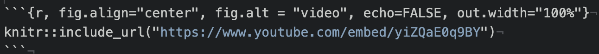

Getting started
- Please take a look at the code of conduct.
Recommended background information
If you are not familiar with Git and Github, we recommend going through these chapters from our Reproducibility courses for quick orientation:
If you aren’t familiar with markdown this is a nice introduction.
For information on RMarkdown (a variation of a markdown file that we use here): RStudio has their lessons here.
Upon creating your repository, issues for getting your course started will be automatically filed in your repository. Go to Issues and you can follow them along to get set up.
1. Create a repository from this template
In the upper right of the landing page for this repository, click the green Use this template button and follow the steps to set up your course’s GitHub repository.

Where is the Use this template button?
2. Name your repository and fill in a short description.

Creating new course repository
3. Your course must be set to public for all Github actions to work.
In particular, the rendered preview on pull requests won’t work, but you can alternatively preview the content by re-rendering locally, we will cover this later.
4. Set up a Git client
If you do not have a method of working with Git already it is recommended you use a git client to help you manage your branches more easily. Install GitKraken for a handy way to manage your course locally.
5. Add jhudsl-robot as a collaborator
*You can skip this step if your course is in the jhudsl organization.
The Github actions in this repository need permissions to fully function. To this end, you need to add the jhudsl-robot as a collaborator on your repository with write permissions.
In your repository, go to your Settings > Collaborators & Teams and click on Add people. In the pop up window, search for and add jhudsl-robot.

Choose the write option then click Add jhudsl-robot to this repository.
6. Set up your Github Personal access token
The OTTR robots need permissions to run some of the actions.
To give them permission for all the actions, you need to set a GitHub secret we will call GH_PAT. Go to Settings > Secrets and scroll down to Repository secrets. Read more about GitHub secrets here if you have general questions.
If you have organization admin privileges and plan on making multiple courses with OTTR, you can set GH_PAT as an organization secret so you don’t have to do this again You only need to do this once as an organization (if this course is under jhudsl you don’t need to do this step).
- Click
New repository secret/New organization secretbutton. - Under name you must use
GH_PAT. - For
value: Create a personal access token following these instructions. UnderneathSelect scopes, check bothrepoandworkflow. Then copy the PAT and save as the value. Your Github actions should all be able to run smoothly now.
7. Set up GitHub pages
Go to Settings > Pages.

Find pages settings

Change pages settings
- Under
Source, pick the drop down menu and pickmainand/docs.
- Then click
Save.
- Lastly, check the box that says
Enforce HTTPSat the bottom of this page.

Enforce HTTPS
* Note that if you go to your pages url right now (before you’ve pushed any file changes) you might see a 404 error because nothing has been triggered to be rendered. You can check your url pages after you file your first pull request (which we will guide you through in the next section).
8. Set up branch rules
* Don’t set these settings right away! Wait a few minutes after starting your repository.
Go to Settings > Branches and click Add rule. This is only possible if you have GitHub Pro, Team, or Enterprise access. We recommend seeing if your organization can give you access if you do not already have access. To get this access through your organization, you will need to transfer ownership of your repo to your organization. See here about how to do this.

Add branch rule
For Branch name pattern, put main.

Put main for branch name pattern
Protect the main branch:
Then check the box that says Require pull requests before merging.
Make sure branches are updated:
- Check the box that says Require status checks to pass before merging. - Underneath this also check the box that says Require branches to be up to date before merging.

Branch settings
After setting up these new branch items, click Create and Save changes.
9. Enroll your repository for OTTR updates
This original course template: https://github.com/jhudsl/OTTR_Template is always a work in progress. We are working on adding more features and smoothing out bugs as we go (this is also why your feedback is greatly appreciated).
When updates are made to files that aren’t specific to the course content but instead run checks and other processes in the original repository, pull requests are filed automatically to any downstream repositories made from this template.
To enroll in these automatic update pull requests, the new course’s repository name will need to be added to this file in the original template
- Got to the respective file:
.github/sync.ymlof the OTTR template repository you created your repository from: - Add your repository’s name where it says
#NEW REPO HERE#, being careful to indent the same amount as the other repositories listed.
- Choose
Create a new branch for this commit and start a pull request.Name the branch what you like.
- Name the commit
Add new repository to sync - Click
Propose changes. - See this guide for any questions you have about creating a pull request from your forked repository.
- Write a short pull request description describing that you are adding a new repository to the sync.yml file.
- Click
Create Pull Request - Request
@cansavvyas a reviewer.
If your new course doesn’t need some of the functionality of these files or you find the automatic updates bothersome, you can feel free to use this guide to tailor which files you want updates for. If you have any questions about the implications of any of these updates or files, please tag @cansavvy.
Start writing content!
Now you have a course repository on GitHub and you’re ready to start editing files.
For any set of file changes, its recommended you file a pull request (which the section below will guide you on if you are unfamiliar). Filing a pull request initiates a series of checks done automatically by GitHub actions which will help you as you add content to your course (If you commit directly to the main branch, you will not reap the full benefit of these automatic checks).
These checks will do important things like: * Check that the all the urls actually take learners somewhere (check-urls) * Check that the code is styled using the styler package (style-and-sp-check) * Check that the spelling is correct using the spelling package (style-and-sp-check) * Create previews of the rendered versions of the course (render-preview) * Check the formatting of any quizzes (check-quizzes)
You can adjust what checks are run by editing the config_automation.yml file. This is further discussed in this section about the GitHub Actions.
File changes to be made
These are a list of changes you’ll want to make to get you started. This same list of changes is printed in an issue automatically on your repository for you to follow.
Files that need edited upon creating a new course.
-
README.md- Fill in all the{ }and delete the first part of the README that is referring to the OTTR_Template. -
index.Rmd-title:should be updated. -
01-intro.Rmd- replace the information there with information pertinent to this new course. -
02-chapter_of_course.Rmd- This Rmd has examples of how to set things up, if you don’t need it as a reference, it can be deleted.
Files that need to be edited upon adding each new chapter (including upon creating a new course):
-
_bookdown.yml- The list of Rmd files that need to be rendered needs to be updated. See instructions. -
book.bib- any citations need to be added. See instructions.
Files that need to be edited upon adding new packages that the book’s code uses:
- If your course will require additional packages,
docker/Dockerfileneeds to have the new package added so it will be installed. See instructions for more on this.
Picking a style
See more about customizing style on this page in the guide. By default this course template will use the jhudsl data science lab style. However, you can customize and switch this to another style set.
Using a style set
Read more about the style sets here.
-
On a new branch, copy the
style-sets/<set-name>/index.Rmdandstyle-sets/<set-name>/_output.ymlto the top of the repository to overwrite the defaultindex.Rmdand_output.yml. -
Copy over all the files in the
style-sets/<set-name>/copy-to-assetsto theassetsfolder in the top of the repository. - Create a pull request with these changes, and double check the rendered preview to make sure that the style is what you are looking for.
Getting started with the Github workflow
If you do not have a method of working with Git already it is recommended you use a git client to help you manage your branches more easily. Install GitKraken for a handy way to manage your course locally. These steps shown here will show you the GitKraken way of handling files.
git clone
It’s ideal to work on your course from your computer (you do not need to install any other software besides git if you don’t want to). To get going, you will need to clone the course repository it to your own computer. Cloning is just making a remote copy of the project local.
So to get started, you will need to clone your course’s repository you created that we will be using for the duration of this course.
To clone a GitHub repository, using GitKraken. First, click Clone a repo. Then, choose where you’d like the repository to be on your computer using the Browse button. You will need to Copy + Paste your new repository’s url to where it says URL.
Navigate to your repository on GitHub to copy the URL. Copying and pasting is advisable because any little typo will inhibit cloning.
Now you are ready to click Clone the repository! It will ask you if you’d like to Open Now, click that.
Create a branch
Handling branches is where you unleash the real benefit of GitHub, but it’s also the confusing part to get a hang of.
The best way to get a grasp on what the branches represent is to create one and start using it.
In GitKraken we can create a new branch; this will be your working copy. First, click the Branch button. Next, type in a branch name in the box that the cursor is blinking in. In our example, we are calling it a-new-branch. Now click Enter! Now you have a new branch!
Now we can edit our files and code however we normally would. Go ahead and make an edit to some of the files listed in the above section.
If you’ve made a change to any file in your repository, it will appear in GitKraken and you can click on it to see the differences.
If we want to add these file changes to our current branch, we need to commit them.
Now that we have changes committed to our branch we are ready to also add them to the remote, internet copy! To do this, we will need to push our branch.
To push means to add changes that are on your new branch to the remote branch (internet version). The word origin just refers to where your branch is stored on the internet. Choose your origin in the dropdown menu and click Submit.
After a variable number of commits, your branch, called a-new-branch is a different version of the original code base that may have a nifty improvement to it. But our main goal is to add that nifty improvement to the main branch. To start this process of bringing in new changes to the main curated repository, we will create a pull request.
From GitHub:
Pull requests let you tell others about changes you’ve pushed to a GitHub repository. Once a pull request is sent, interested parties can review the set of changes, discuss potential modifications, and even push follow-up commits if necessary.
Pull Requests are the meat of how code changes and improvements get reviewed and incorporated! A vast majority of the benefits of incorporating GitHub into your workflow centers around fully utilizing the power of pull requests!
Now we can open up a pull request if we go to our GitHub repository on GitHub.
After you click on Compare & pull request you’ll be taken to a screen where you can add information about your changes. After you are done writing your description, click Create Pull Request! (If you don’t have your pull request description perfect don’t worry about it, you can always edit it later).
Congrats! You’ve just opened a pull request!
Checks on the pull requests
With your pull request open, the series of OTTR GitHub actions checks will commence! They will print out reports in comments on your pull request.

Read those comments to begin addressing the problems with more commits to your branch.
You can adjust what checks are run by editing the config_automation.yml file. This is further discussed in this section about the GitHub Actions.
If you need more information on failed GitHub actions you can scroll to the bottom of your pull request where the status of the checks are shown and click on Details for more information. If you are unsure what the error message means and have trouble addressing it, please file an issue on the OTTR_Template repository to get help.
To summarize, this is what this workflow looks like:
For more on what to put in a pull request’s description you can read this chapter
For more on how to review a pull request, see this chapter
Setting up images
To maintain style and attributions for graphics and images, as well as to enable easy updates in the future, please start a new Google Slide document for your course.
Important: :warning: Your Google Slide document must be set to Anyone with a link. See this article for more details. The renders will fail if this is not set!
This also allows you to make videos of your slides that can be added to your course.
Each Rmd with images that is a part of your Bookdown needs to have this chunk at the beginning so that images are stored properly for Leanpub conversion.
If you are unfamiliar with how R Markdown code chunks work, read this.

Next, import the appropriate theme (see this video for assistance):
Note that you will need to change your Google Slide permissions to “Anyone with a link” in order for some functionality to work.
Accessibility
Each slide and image added to the courses needs to be accessible. There are two things to check for each slide:
Each slide is described in the notes of the slide so learners relying on a screen reader can access the content. See https://lastcallmedia.com/blog/accessible-comics for more guidance on this.
The color palette choices of the slide are contrasted in a way that is friendly to those with color vision deficiencies. You can check this using Color Oracle.
Adding images and graphics in text
All images should be included in your Google Slides with the captions we discussed above. To add images in the text in your Rmd, use the following function within an R code chunk.

You can obtain the

Google slide url
Also add notes (the same as the fig.alt text) to each slide in the google slide presentation describing the text or images of the slide to allow for the content to be accessible to vision impaired individuals, as this can be converted to audio. Note that you can’t have any line breaks within the fig.alt text. If there are no line breaks the text should appear blue within the code chunk.
The echo=FALSE ensures that the r code is hidden from your course, while the out.width = "100%" is used to size the image. We generally recommend going with larger images.
You must define fig.alt in the code chunk options/parameters to pass to knitr. You can adjust the size(fig.hight, fig.width, out.width, out.height), alignment (fig.align), or caption (fig.cap) of the image you can use these arguments in the code chunk tag:

Google Slides must be public. Share settings must be set to “Anyone on the internet with this link can view”. Note that “Private” is the default setting when you make a new presentation.
See Chapter 2 of the template course for examples.
Adding videos in text
To add a youtube video to your Rmd files use the following:
To get the appropriate youtube url do the following: 1) click on the SHARE button on the lower right corner of the video on youtube 2) click on the Embed option on the far left 3) copy just the part after "src =" and paste the url into the knitr::include_url() function
Again, it is important to use the echo=FALSE option so that only the video is shown and not the code to generate it.
See Chapter 2 of the template course for examples.
Adding embedded files to text
Sometimes it is useful to include an embedded version of a website or file on a website, if there is a particularly important link and you don’t want to rely on learners clicking the link.
To include such a file or website do the following:

Again you will need to include echo = FALSE to ensure that the code to generate the preview of the website or file is not included in your course material.

If you want to include a file that is not hosted online, consider hosting it on GitHub using the method described for hosting your Bookdown version of the course. See the Set up GitHub pages section.
Then you would do the following, where the url is that of your hosted file:

See Chapter 2 of the template course for examples.
Learning Objectives Formatting
Each chapter should start with Learning objectives! You can use this website to help you craft learning objectives.
Learning objectives should be stated both in the slides and in the beginning of each bookdown chapter. Because of this, you may find it most handy to use the List layout slide for stating your Learning objectives and then embed that in the book from your GoogleSlides the instructions here.